计算机组成复习笔记
计算机组成复习笔记
典型综合题
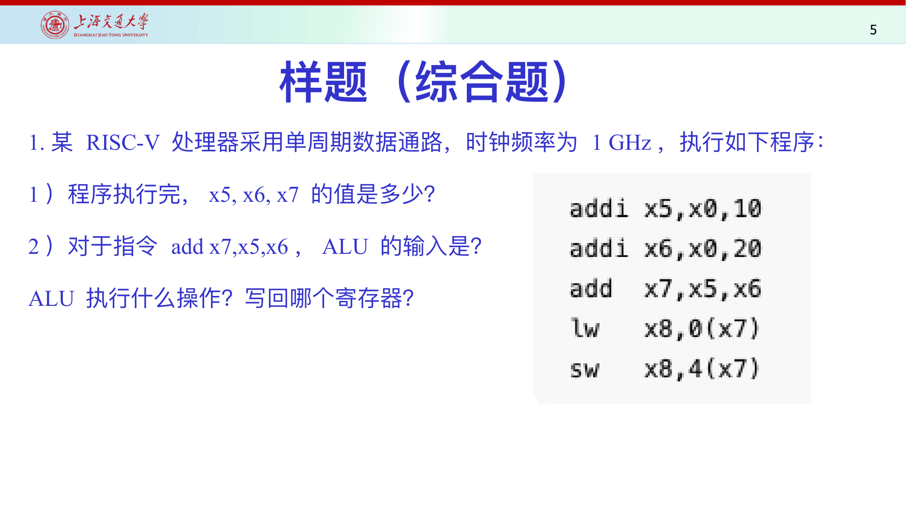
程序：
addi x5,x0,10 addi x6,x0,20 add x7,x5,x6 lw x8,0(x7) sw x8,4(x7)
结论：
x5 = 10，x6 = 20，x7 = 30。若只问
add x7,x5,x6：ALU 输入是x5和x6的读出值，即10和20；ALU 操作是加法；结果写回x7。单周期 CPU 中每条指令 1 个周期。若时钟频率为
1 GHz，周期为1 ns，这 5 条指令理想执行时间为5 ns。
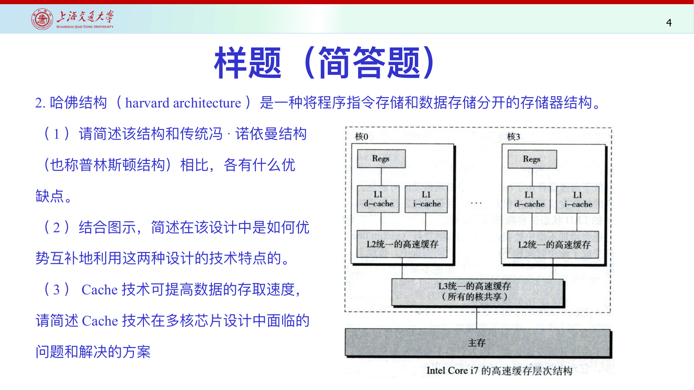
简答题模板：
哈佛结构：指令存储器和数据存储器分开，取指和访存可并行，结构清晰，带宽高；缺点是资源分开后灵活性差，容量难共享，软硬件设计更复杂。
冯诺依曼结构：指令和数据共用存储器，统一地址空间，简单灵活；缺点是取指和数据访问争用同一通路，形成冯诺依曼瓶颈。
现代处理器常用“改进哈佛结构”：L1 I-Cache 和 D-Cache 分开，降低取指/访存冲突；更下层 Cache 或主存统一，兼顾灵活性和性能。
多核 Cache 的问题：多个核可能缓存同一内存块，写入后副本不一致。解决：监听式无效化协议、更新协议、目录协议、MESI/MOESI 状态、内存屏障和一致性模型。
1. 计算机抽象与技术
本章要会把“快不快”说清楚：性能公式、影响因素、功耗墙和抽象层次是核心。
1.1 抽象层次和 ISA
计算机系统从上到下可以看成多层抽象：
应用程序
高级语言
汇编语言
指令集体系结构 ISA
微体系结构：数据通路、控制器、流水线、Cache
数字逻辑
器件和半导体工艺
ISA 是硬件/软件接口。软件只要遵守 ISA，就不必关心底层到底是单周期、多周期、流水线还是乱序执行。硬件只要实现同一个 ISA，就能运行同一类二进制程序。
1.2 性能公式
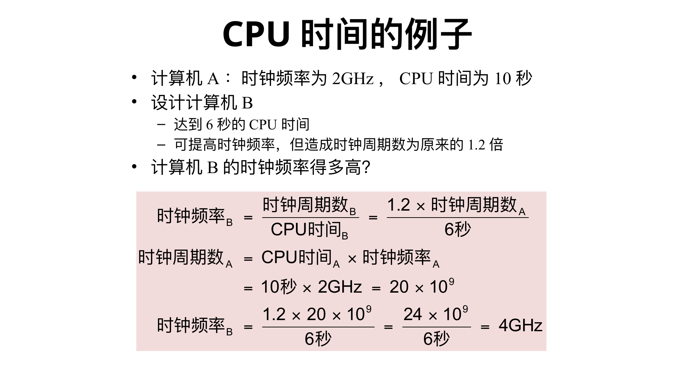
最核心公式：
\[CPU\ Time = Instruction\ Count \times CPI \times Clock\ Cycle\ Time\]
也可以写成：
\[CPU\ Time = \frac{Instruction\ Count \times CPI}{Clock\ Rate}\]
含义：
指令数 IC 受算法、编程语言、编译器、ISA 影响。
CPI 受程序指令组合、微体系结构、Cache、流水线冒险影响。
时钟周期受工艺、数据通路关键路径、设计复杂度影响。
常见陷阱：
只看时钟频率不等于性能好。频率高但 CPI 大，可能更慢。
只看指令数不等于性能好。复杂指令可能条数少但周期长。
MIPS 不适合跨 ISA 比较，因为不同 ISA 的指令工作量不同。
1.3 响应时间、吞吐率和加速比
响应时间：一个任务从开始到完成的时间。单个程序性能主要看它。
吞吐率：单位时间完成多少任务。服务器、批处理系统常看它。
相对性能：
\[Performance = \frac{1}{Execution\ Time}\]
若 A 比 B 快：
\[\frac{Performance_A}{Performance_B} = \frac{Execution\ Time_B}{Execution\ Time_A}\]
1.4 功耗墙
动态功耗近似：
\[Power \propto Capacitive\ Load \times Voltage^2 \times Frequency\]
降低电压能显著降功耗，但电压不能无限降；频率也不能无限升。因此现代性能提升更多依赖并行、流水线、Cache、向量化和专用加速器。
2. 指令：计算机的语言
本章核心是 RISC-V 的“规整性”：寄存器操作、load/store 架构、固定长度编码、少量格式组合出所有指令。
2.1 RISC-V 基本原则
核心设计原则：
简单源于规整：例如大多数指令是 32 位定长。
越小越快：寄存器数量有限，寄存器访问比内存快。
加速大概率事件：常用路径要快。
好设计需要折中：编码空间、硬件复杂度、程序长度之间要平衡。
RISC-V 是 load/store 架构：
算术逻辑运算只在寄存器之间做。
内存数据必须先用
lw等 load 指令读入寄存器。结果写回内存必须用
sw等 store 指令。
2.2 寄存器和调用约定
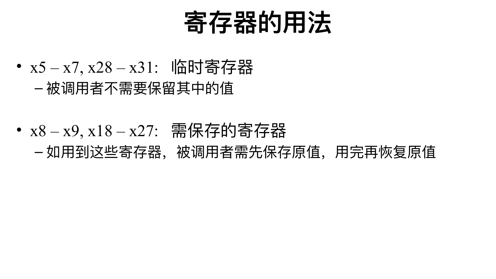
常用寄存器：
| 寄存器 | ABI 名 | 用途 | 保存责任 |
|---|---|---|---|
x0 |
zero |
恒为 0 | 不可改 |
x1 |
ra |
返回地址 | 调用者按需保存 |
x2 |
sp |
栈指针 | 被调用者维护 |
x5-x7,
x28-x31 |
t0-t6 |
临时寄存器 | 调用者保存 |
x8-x9,
x18-x27 |
s0-s11 |
保存寄存器 | 被调用者保存 |
x10-x17 |
a0-a7 |
参数和返回值 | 调用者保存 |
过程调用要点：
jal rd,label：跳转，并把返回地址写入rd，通常rd = x1/ra。jalr x0,0(ra)：返回调用者。非叶子过程要保存
ra，因为它还会调用其他过程。栈向低地址增长。进入函数常见操作是
addi sp,sp,-frame_size，退出时恢复。
2.3 指令格式
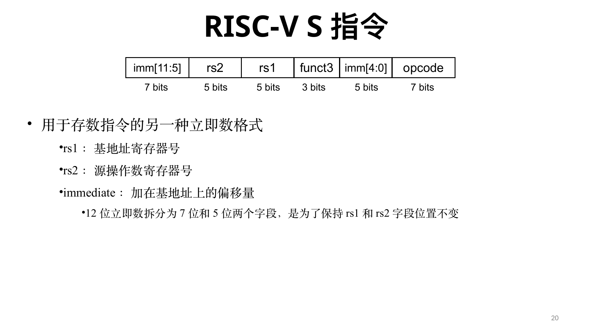
常考格式：
| 格式 | 典型指令 | 关键字段 |
|---|---|---|
| R 型 | add, sub,
and, or |
funct7 rs2 rs1 funct3 rd opcode |
| I 型 | addi, lw,
jalr |
imm``[``11:0``]`` rs1 funct3 rd opcode |
| S 型 | sw |
imm``[``11:5``]`` rs2 rs1 funct3 imm``[``4:0``]`` opcode |
| B 型 | beq, bne,
blt |
分支立即数被拆散存放，目标地址 PC 相对 |
| U 型 | lui, auipc |
高 20 位立即数 |
| J 型 | jal |
跳转立即数被拆散存放，目标地址 PC 相对 |
答题时先判断“读几个寄存器、写不写寄存器、访不访存、改不改 PC”。
2.4 数的表示和小端
n 位无符号数范围：
\[0 \sim 2^n - 1\]
n 位补码范围：
\[-2^{n-1} \sim 2^{n-1}-1\]
负数补码求法：绝对值二进制取反加一。例如 32 位 -6：
6 = 0x00000006 -6 = 0xFFFFFFFA
小端存储：低地址放最低有效字节。所以 0xFFFFFFFA
从低地址到高地址依次是：
FA FF FF FF
这类题的正确判断是 0xFA, 0xFF, 0xFF, 0xFF。
符号扩展：把最高符号位复制到新增高位。例如 8 位 11111010
扩展到 32 位是 11111111 11111111 11111111 11111010。
零扩展：高位补 0，常用于无符号数或逻辑立即数。
2.5 分支、循环和寻址
条件分支：
beq rs1,rs2,label：相等跳转。bne rs1,rs2,label：不等跳转。blt,bge：有符号比较。bltu,bgeu：无符号比较。
循环翻译套路：
while (i < n) { sum += a[i]; i++; }
对应汇编思路：
比较
i和n，不满足就跳出。计算地址
base + i * element_size。lw取数组元素。累加。
i++后跳回循环头。
数组访问常考点：
int通常 4 字节，索引i要左移 2 位得到字节偏移。RISC-V 的
lw rd,offset(rs1)地址是rs1 + sign_extend(offset)。sw rs2,offset(rs1)写入内存地址rs1 + offset，写入值来自rs2。
2.6 翻译、链接和装载
从 C 程序到运行：
C 源程序 -> 编译器 -> 汇编程序 -> 汇编器 -> 目标文件 -> 链接器 -> 可执行文件 -> 装载器 -> 内存中运行
要点：
编译器生成汇编代码。
汇编器生成目标模块，包含机器码、符号表、重定位信息。
链接器合并目标模块和库，解析外部符号。
装载器把程序放入内存，初始化寄存器和栈，然后跳到入口。
3. 计算机的算术运算
本章不是只背公式，更要知道每一串位要按哪种“解释方式”理解。相同位串按无符号、补码、浮点解释会得到不同值。
3.1 整数加减和溢出
补码加法直接按二进制相加，丢弃最高进位。溢出判断：
两个正数相加得到负数，溢出。
两个负数相加得到正数，溢出。
一正一负相加不会溢出。
无符号加法溢出看最高进位；有符号补码溢出看符号是否异常。
减法可以转成加法：
\[a - b = a + (-b)\]
3.2 乘法和除法
乘法硬件基本思想：
被乘数按乘数每一位决定是否加到积中。
每轮移位，类似手算二进制乘法。
优化乘法器通过并行加法树或 Booth 编码减少周期。
除法硬件基本思想：
试减除数，若结果非负则商位为 1，否则恢复。
每轮移位，类似长除法。
RISC-V 中乘除法通常由 M 扩展提供：
mul：低位乘积。mulh,mulhu,mulhsu：高位乘积，区分有符号/无符号。div,divu：除法。rem,remu：余数。
3.3 浮点表示
IEEE 754 规格化浮点数：
\[x = (-1)^s \times (1.fraction) \times 2^{E-bias}\]
| 类型 | 总位数 | 符号位 | 指数位 | 尾数位 | 偏置 |
|---|---|---|---|---|---|
| 单精度 float | 32 | 1 | 8 | 23 | 127 |
| 双精度 double | 64 | 1 | 11 | 52 | 1023 |
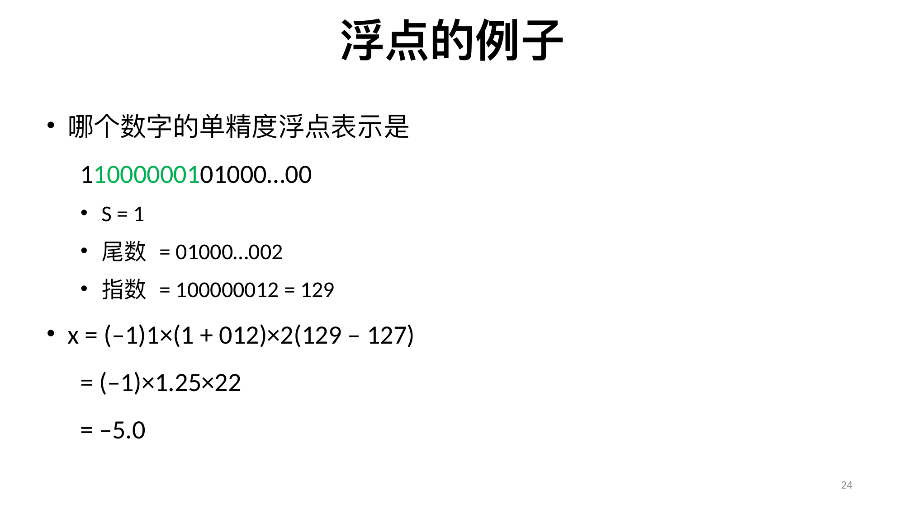
特殊值：
指数全 0，尾数全 0：正负 0。
指数全 0，尾数非 0：非规格化数，用于表示更接近 0 的数。
指数全 1，尾数全 0：正负无穷。
指数全 1，尾数非 0：NaN。
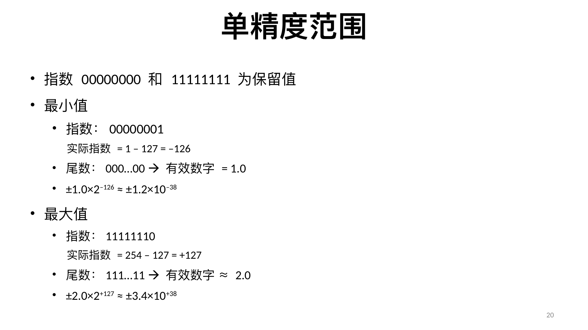
3.4 浮点运算步骤
浮点加法常见步骤：
对阶：让两个数指数相同，小指数尾数右移。
尾数加减。
规格化：调整尾数到
1.xxxx形式，并修正指数。舍入。
检查溢出、下溢和特殊值。
浮点陷阱：
浮点数不能精确表示所有十进制小数。
加法不满足严格结合律：
(a+b)+c可能不等于a+(b+c)。大数加小数时，小数可能因对阶右移而丢失。
4. 处理器
第 4 章是全课最像综合题的部分。答题要从“某条指令经过哪些部件、控制信号怎么设、结果写到哪里”入手。
4.1 单周期数据通路
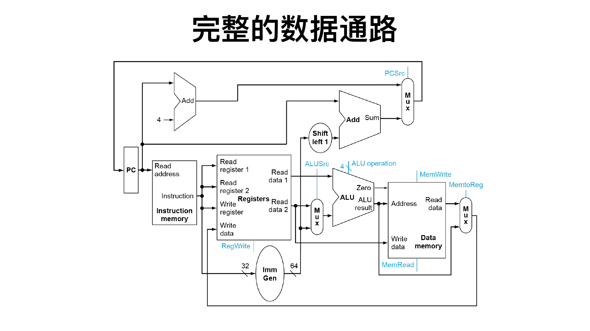
单周期 CPU 每条指令在一个时钟周期内完成，CPI = 1，但时钟周期必须足够长，能容纳最慢指令的路径。
五个常用阶段：
| 阶段 | 动作 |
|---|---|
| IF | 根据 PC 取指令，同时计算
PC + 4 |
| ID | 译码，读寄存器，立即数扩展 |
| EX | ALU 运算，计算地址，比较分支条件 |
| MEM | 访问数据存储器，load 或 store |
| WB | 写回寄存器 |
虽然单周期不是流水线，但分析单条指令时也常按这五步说。
4.2 控制信号
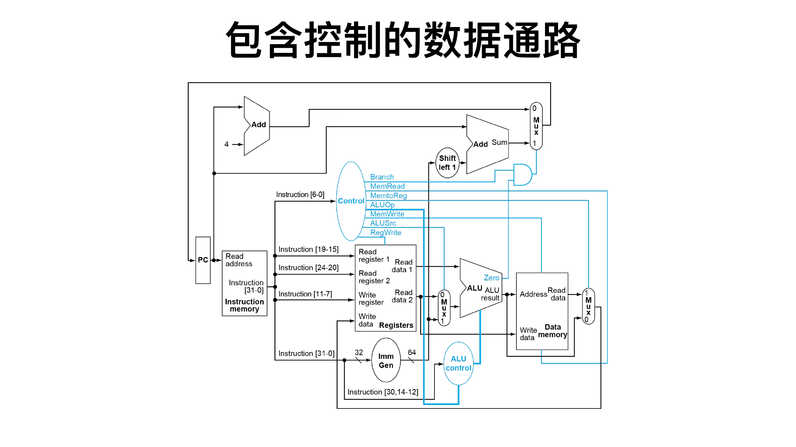
常见指令控制信号：
指令 |
RegWrite |
ALUSrc |
MemRead |
MemWrite |
MemtoReg |
Branch |
ALU 操作 |
|---|---|---|---|---|---|---|---|
R 型 add/sub |
由 funct 字段决定 | ||||||
addi |
加法 | ||||||
lw |
地址加法 | ||||||
sw |
x | 地址加法 | |||||
beq |
x | 减法/比较 |
答综合题时按下面模板：
指令类型：R/I/S/B/J。
读寄存器：
rs1、rs2分别是谁。ALU 输入：第一个通常来自
rs1，第二个来自rs2或立即数。ALU 操作：加、减、与、或、比较、地址计算。
访存：是否读/写数据存储器，地址是什么，数据是什么。
写回：是否写寄存器，写哪个寄存器，写 ALU 结果还是内存数据。
PC：
PC+4、分支目标还是跳转目标。
4.3 样题程序的数据通路分析
addi x5,x0,10 addi x6,x0,20 add x7,x5,x6 lw x8,0(x7) sw x8,4(x7)
逐条结果：
| 指令 | ALU 输入 | ALU 操作 | 访存 | 写回 |
|---|---|---|---|---|
addi x5,x0,10 |
0, 10 |
加 | 无 | x5 = 10 |
addi x6,x0,20 |
0, 20 |
加 | 无 | x6 = 20 |
add x7,x5,x6 |
10, 20 |
加 | 无 | x7 = 30 |
lw x8,0(x7) |
30, 0 |
地址加法 | 读 Mem``[``30``] |
x8 = Mem``[``30``] |
sw x8,4(x7) |
30, 4 |
地址加法 | 写 Mem``[``34``]`` = x8 |
无 |
注意：如果题目没有给出 Mem``[``30``] 的初值，就不能给出
x8 的具体数值，只能写 x8 = Mem``[``30``]。
4.4 流水线
理想五级流水线：
IF -> ID -> EX -> MEM -> WB
流水线提高的是吞吐率，不减少单条指令延迟。理想情况下，k 级流水线执行 n 条指令需要：
\[n + k - 1\]
个周期。n 很大时，理想加速比接近 k。
本章小结里的核心句：
流水线通过并行执行多条指令提高吞吐率。
每条指令的延迟基本不变。
性能受结构冒险、数据冒险、控制冒险制约。
ISA 会影响流水线实现复杂度。
4.5 数据冒险、旁路和阻塞
数据冒险：后一条指令需要前一条尚未写回的结果。
常见 RAW 相关：
add x1,x2,x3 sub x4,x1,x5
sub 在 ID/EX 阶段需要 x1，但
add 的结果还没写回。解决办法：
旁路/前递：从 EX/MEM 或 MEM/WB 直接把结果送到 ALU 输入。
阻塞：插入气泡，等数据可用。
编译器调度：重排无关指令填空。
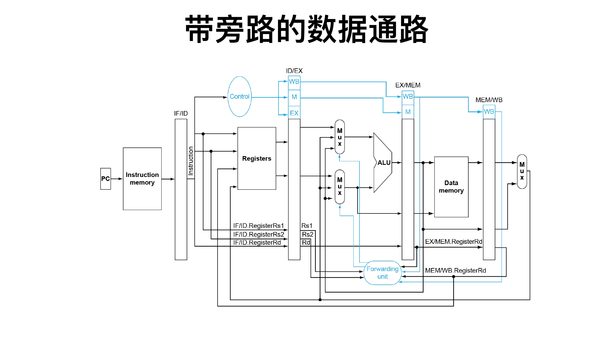
旁路判断条件常见写法：
EX hazard: EX/MEM.RegWrite and EX/MEM.Rd != 0 and EX/MEM.Rd == ID/EX.Rs1 or Rs2
MEM hazard: MEM/WB.RegWrite and MEM/WB.Rd != 0 and MEM/WB.Rd == ID/EX.Rs1 or Rs2
取数-使用型冒险 load-use：
lw x1,0(x2) add x3,x1,x4
即使有旁路也通常要阻塞 1 个周期，因为 load 数据到 MEM 末尾才出来，下一条的 EX 阶段太早。
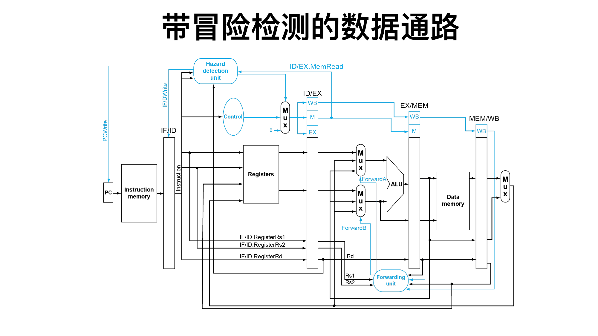
load-use 阻塞条件：
ID/EX.MemRead and (ID/EX.Rd == IF/ID.Rs1 or ID/EX.Rd == IF/ID.Rs2)
阻塞动作：
PC 不更新。
IF/ID 寄存器不更新。
ID/EX 控制信号清 0，插入 bubble。
4.6 控制冒险
控制冒险来自分支和跳转。若分支结果晚到，处理器可能已经取了错误路径上的指令。
解决办法：
阻塞到分支结果确定。
提前在 ID 阶段比较寄存器并计算目标地址。
静态预测：总是假设不跳或总是假设跳。
动态预测：用分支历史表、1 位/2 位预测器。
预测错误时 flush 错误路径指令。
答题关键词：flush、stall、branch penalty、prediction accuracy。
4.7 异常和中断
异常来自当前指令内部，例如非法指令、算术溢出、缺页。中断通常来自外部设备。
处理流程：
保存异常 PC。
记录异常原因。
跳转到异常处理程序。
处理后返回或终止程序。
流水线中理想目标是精确异常：异常发生时，看起来像前面的指令都完成、后面的指令都没执行。
5. 存储器层次结构
第 5 章公式多、概念也多：Cache 地址分解、命中/缺失、AMAT、多核 Cache 一致性都要会。
5.1 局部性和层次结构
局部性原理：
时间局部性：刚访问过的数据/指令，很可能很快再次访问。
空间局部性：访问了某地址，附近地址很可能也会访问。
存储层次从快到慢、从小到大大致是：
寄存器 -> L1 Cache -> L2 Cache -> L3 Cache -> DRAM -> SSD/HDD
选择题中“访问速度最快”通常选高速缓存 Cache，而不是内存、硬盘或光盘。
5.2 Cache 地址分解
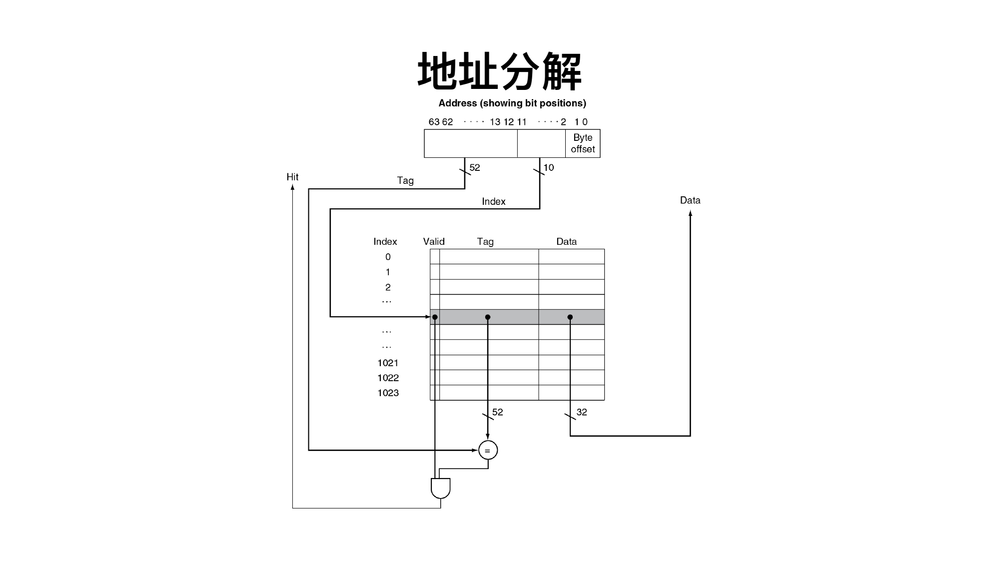
核心公式：
块内偏移位数 = log2(块大小，单位字节) 组索引位数 = log2(组数) 组数 = Cache 容量 / (块大小 × 相联度) 标记位数 = 地址位数 - 组索引位数 - 块内偏移位数
直接映射是 1 路组相联。全相联没有索引位，任意块可放任意位置。
查找流程：
用 index 找到组。
比较 tag。
valid 位为 1 且 tag 匹配，则命中。
用 offset 选择块内字节/字。
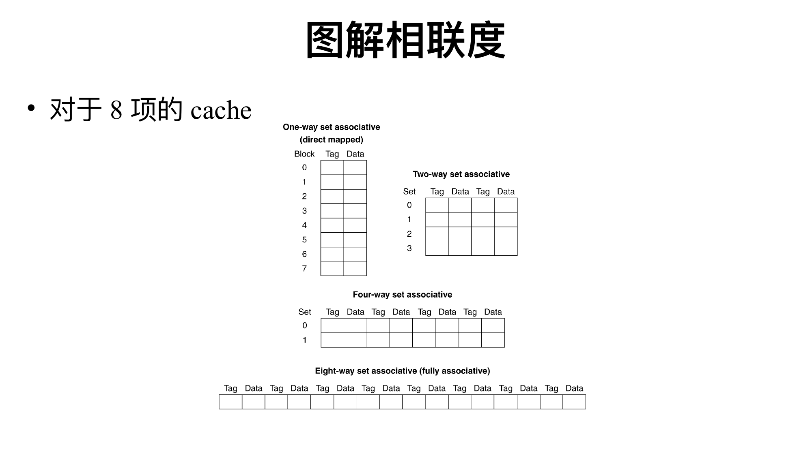
相联度权衡：
直接映射：硬件简单，命中时间短，但冲突缺失多。
组相联：减少冲突缺失，但比较器更多，命中时间可能变长。
全相联：冲突最少，但硬件最复杂。
5.3 Cache 写策略
写命中策略：
写直达 write-through：同时写 Cache 和下一级存储器。实现简单，下层数据新，但写流量大，常配写缓冲。
写回 write-back：只写 Cache，置 dirty 位，替换时再写回。写流量小，但一致性更复杂。
写缺失策略：
写分配 write-allocate：缺失时把块调入 Cache 再写。
非写分配 no-write-allocate：缺失时直接写下一级，不调入 Cache。
常见组合：
写回 + 写分配。
写直达 + 非写分配。
5.4 AMAT 和性能
平均访问时间：
\[AMAT = Hit\ Time + Miss\ Rate \times Miss\ Penalty\]
多级 Cache：
\[AMAT = L1HitTime + L1MissRate \times (L2HitTime + L2MissRate \times MemoryPenalty)\]
内存阻塞周期：
\[Memory\ Stall\ Cycles = Memory\ Accesses \times Miss\ Rate \times Miss\ Penalty\]
若按每条指令算：
\[Memory\ Stall\ Cycles/Instruction = Accesses/Instruction \times Miss\ Rate \times Miss\ Penalty\]
本章小结强调：CPU 越快，Cache miss 的相对代价越大。只优化 CPU 而忽视 Cache，整体性能可能上不去。
5.5 缺失类型
3C 模型：
强制缺失 compulsory miss：第一次访问某块，Cache 中不可能有。
容量缺失 capacity miss：Cache 太小，放不下工作集。
冲突缺失 conflict miss：相联度不够，多个块竞争同一位置。
优化方向：
增大块大小：利用空间局部性，但太大会增加缺失代价和污染。
增大 Cache：降低容量缺失，但可能增加命中时间。
增大相联度：降低冲突缺失，但硬件复杂。
多级 Cache：兼顾 L1 快和低层容量大。
5.6 虚拟存储和 TLB
虚拟地址分为：
Virtual Page Number | Page Offset
页内偏移不变，虚拟页号通过页表翻译成物理页号。
TLB 是页表项的 Cache：
TLB 命中：直接得到物理页号。
TLB 缺失：查页表，把页表项装入 TLB。
页表项无效：发生缺页异常，从磁盘调页。
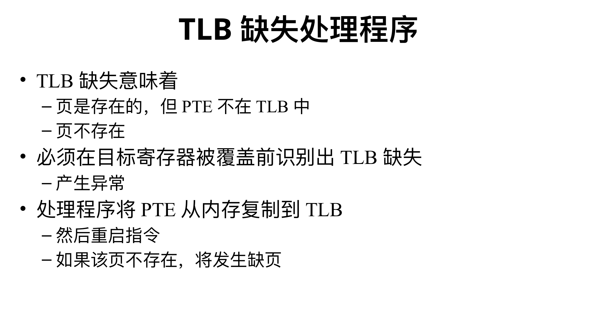
缺页代价很大，所以页面通常很大，替换策略也更谨慎。虚拟存储的好处：
给每个程序独立地址空间。
支持保护。
让程序认为自己有连续大内存。
只把活跃页面装入内存。
5.7 Cache 一致性和存储器一致性
多核中，每个核有自己的 Cache。若多个 Cache 持有同一块，某核写入后其他核的旧副本会导致不一致。
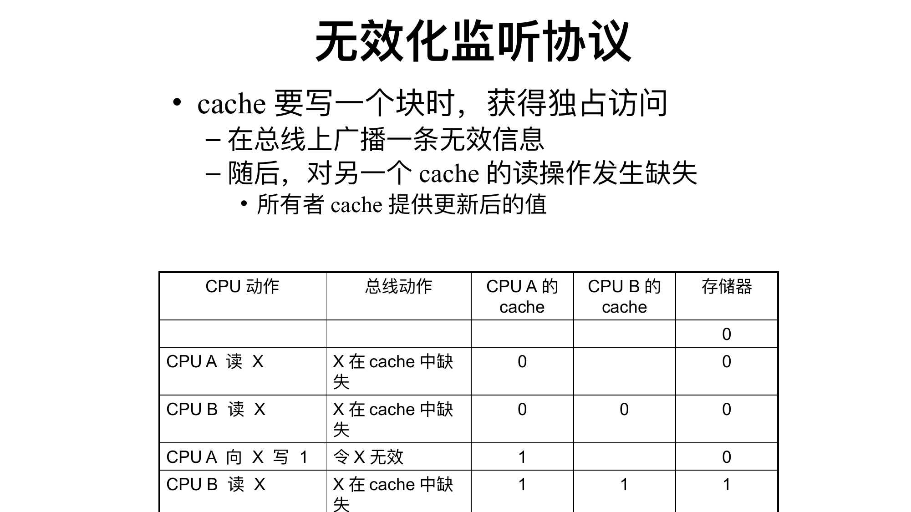
一致性需要保证：
写传播：一个核的写最终能被其他核看到。
写串行化：所有核看到同一地址的写入顺序一致。
常见协议：
监听式 snooping：所有 Cache 监听总线事务。
无效化 invalidation：写前让其他副本失效。
更新 update：写后把新值发给其他副本。
目录式 directory：由目录记录哪些 Cache 持有某块，适合大规模多处理器。
简答题要区分：
Cache coherence：同一地址的多个缓存副本是否一致。
Memory consistency：不同地址的读写在多处理器中按什么顺序可见。
5.8 可靠性和校验
常见术语：
MTTF：平均无故障时间。
MTTR：平均修复时间。
可用性：
\[Availability = \frac{MTTF}{MTTF + MTTR}\]
ECC：
奇偶校验能发现单比特错误，但不能纠正。
SEC：single error correction，可纠正 1 位错误。
DED：double error detection，可发现 2 位错误。
SEC/DED 常用于内存可靠性。
6. 并行处理器
第 6 章多为概念题和公式题。核心是：并行能提高性能，但受串行部分、通信、同步、内存带宽和编程难度限制。
6.1 Amdahl 定律
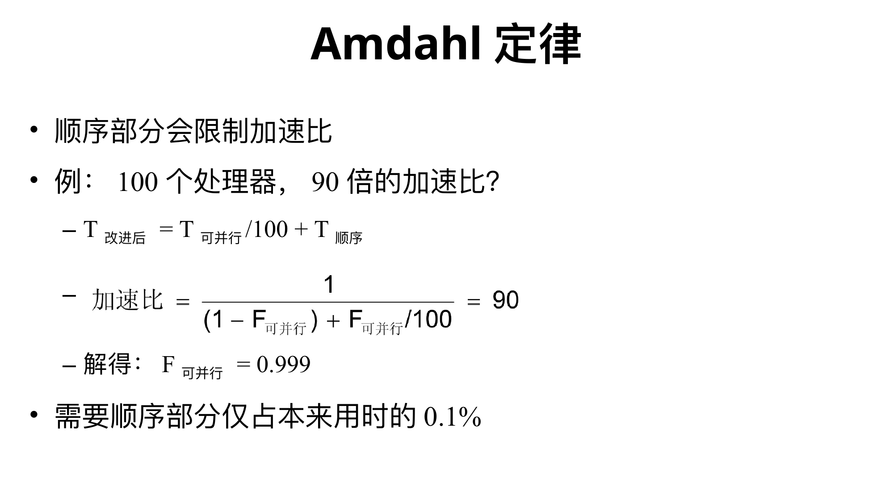
若程序中比例为 F 的部分被加速 S
倍，总加速比：
\[Speedup = \frac{1}{(1-F)+\frac{F}{S}}\]
极限：当 S 无限大时，
\[Speedup_{max} = \frac{1}{1-F}\]
含义：串行部分会限制总加速比。想靠更多处理器获得接近线性的加速，串行部分必须极小。
强比例缩放和弱比例缩放：
强比例缩放：问题规模固定，处理器更多，运行时间应下降。
弱比例缩放：每个处理器负载固定，处理器更多，问题规模同步变大。
6.2 SIMD、向量和多线程
Flynn 分类：
| 类型 | 指令流 | 数据流 | 例子 |
|---|---|---|---|
| SISD | 单 | 单 | 传统单核顺序处理 |
| SIMD | 单 | 多 | 向量处理器、GPU warp、媒体扩展 |
| MIMD | 多 | 多 | 多核、多处理器、集群 |
| MISD | 多 | 单 | 少见 |
SIMD 适合规则数据并行，例如数组加法、矩阵运算、图像处理。缺点是分支发散和数据不规则会降低效率。
多线程：
细粒度多线程：每周期切换线程，隐藏延迟。
粗粒度多线程：遇到长延迟事件才切换。
同时多线程 SMT：同一周期发射多个线程的指令，提高硬件利用率。
6.3 GPU 和共享内存
GPU 特点：
大量简单计算核心。
高吞吐，适合数据并行。
内存层次复杂，带宽高但延迟也高。
分支发散、非合并访存会拖慢性能。
共享内存多处理器：
多个处理器共享同一地址空间。
程序员通过锁、信号量、原子操作同步。
难点是竞争、死锁、负载均衡和 Cache 一致性。
消息传递：
每个节点有独立地址空间。
通过 send/receive 通信。
适合集群，但通信开销和数据划分很关键。
6.4 Roofline 模型
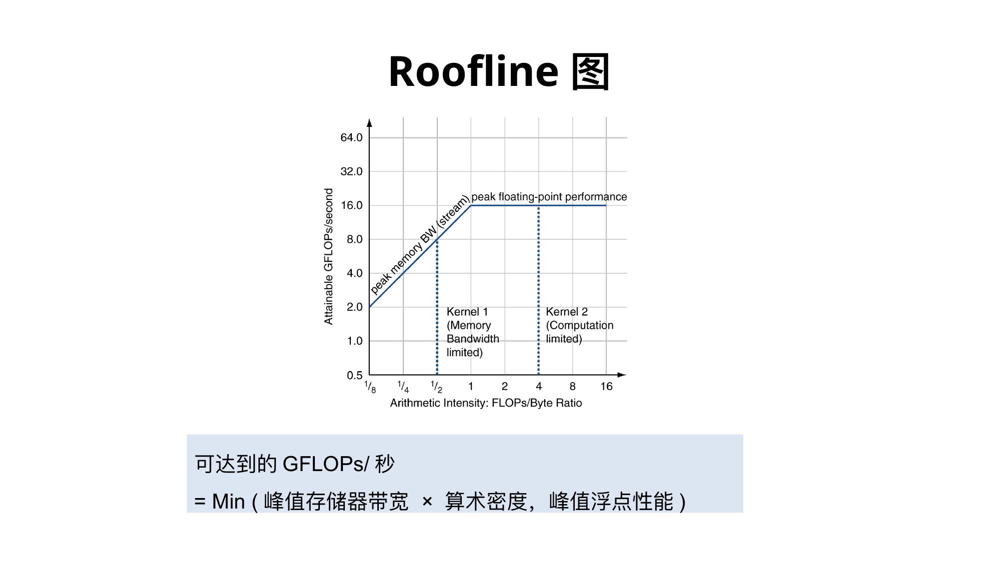
Roofline 用两个瓶颈估计性能：
\[Attainable\ Performance = \min(Peak\ Compute,\ Memory\ Bandwidth \times Operational\ Intensity)\]
其中 operational intensity 是：
\[\frac{Operations}{Bytes\ Transferred}\]
判断：
若算术强度低，性能受内存带宽限制。
若算术强度高，性能受峰值计算能力限制。
7. 常见题型模板
7.1 选择题速记
访问速度：寄存器最快，其次 Cache，再次主存，磁盘/光盘最慢。若选项是 Cache、内存、硬盘、光盘，选 Cache。
小端：低地址放低有效字节。
0x12345678低地址到高地址是78 56 34 12。补码：负数不是反码存储，而是补码存储。
流水线：提高吞吐率，不降低单条指令延迟。
Cache miss 代价会随 CPU 变快而更明显。
x0永远是 0，写x0无效。lw写寄存器，sw不写寄存器。beq通常不写寄存器，只可能改变 PC。
7.2 简答题模板
答结构比较题：
先定义 A 和 B。 再分别写 A 的优点、缺点。 再写 B 的优点、缺点。 最后写现代系统如何折中使用。
答 Cache/流水线问题：
先说明问题是什么。 再说明问题为什么会发生。 再给硬件方案。 再给软件/编译器方案。 最后补一句性能权衡。
7.3 综合题解题顺序
RISC-V 程序执行：
写出每条指令的语义。
更新寄存器。
load/store 若内存值未知，保留符号表达式。
分支/跳转要更新 PC。
最后按题目问的寄存器或内存地址给答案。
单周期数据通路：
判断指令类型。
找
rs1、rs2、rd和立即数。写 ALU 两个输入。
写 ALU 操作。
写是否访问数据存储器。
写写回来源和目标寄存器。
写 PC 选择。
Cache 题：
算块大小对应的 offset 位。
算组数和 index 位。
剩下是 tag 位。
对每个地址分解 tag/index/offset。
根据 valid、tag、替换规则判断 hit/miss。
用 AMAT 或 miss penalty 算性能。
流水线题：
画 IF/ID/EX/MEM/WB 时间表。
找 RAW 相关。
看能否旁路。
load-use 通常插 1 个 bubble。
分支按题目设定处理：阻塞、预测或 flush。
8. 完整例题
本章把前面的知识点串成完整推理过程。
8.1 一条 C 语句怎样变成硬件动作
先用一条简单语句建立全局图景：
c = a + b;
如果 a、b、c
都在内存里，处理器不能直接让内存和内存相加。RISC-V 是 load/store
架构，所以必须先把内存数据取到寄存器：
lw x5, 0(x10) # x5 = a lw x6, 0(x11) # x6 = b add x7, x5, x6 # x7 = a + b sw x7, 0(x12) # c = x7
这段程序串起几个核心环节：
指令系统回答“软件怎样命令硬件”：
lw、add、sw是 ISA 的一部分。数据表示回答“位串是什么意思”：
x5里的 32/64 位按补码、无符号或浮点解释会得到不同值。处理器回答“一条指令怎样执行”：取指、译码、读寄存器、ALU、访存、写回。
存储系统回答“内存为什么看起来够快”：大多数
lw/sw先访问 Cache，不是每次都去 DRAM。并行处理回答“怎样进一步变快”：多个核心、SIMD、GPU、流水线同时工作，但会遇到依赖、通信和一致性问题。
因此做题时要先定位题目属于哪一层：
| 题目问法 | 所属层次 | 第一反应 |
|---|---|---|
| 某寄存器最后是多少 | ISA/程序执行 | 逐条写语义，更新寄存器 |
| ALU 输入是什么 | 数据通路 | 找
rs1、rs2/imm，看 ALUSrc |
| 是否命中 Cache | 存储层次 | 分解地址：tag/index/offset |
| 流水线停几个周期 | 微体系结构 | 找 RAW、load-use、分支 |
| 加速比是多少 | 性能/并行 | 套 CPU 时间或 Amdahl 公式 |
8.2 性能题从零推导
性能题不要上来就套一个公式，先问自己“题目给的是时间、频率、CPI 还是指令数”。
核心关系只有一个：
\[CPU\ Time = Instruction\ Count \times CPI \times Clock\ Cycle\ Time\]
由于：
\[Clock\ Cycle\ Time = \frac{1}{Clock\ Rate}\]
所以：
\[CPU\ Time = \frac{Instruction\ Count \times CPI}{Clock\ Rate}\]
例题 1：比较两台机器
机器 A：指令数 10^9，CPI = 2，频率 2 GHz。
机器 B：指令数 1.2 × 10^9，CPI = 1.5，频率 1.5 GHz。
计算：
A 时间 = 10^9 × 2 / (2 × 10^9) = 1 s B 时间 = 1.2 × 10^9 × 1.5 / (1.5 × 10^9) = 1.2 s
所以 A 更快。A 相对 B 的性能比：
\[\frac{Performance_A}{Performance_B}=\frac{Time_B}{Time_A}=1.2\]
即 A 快 20%。
例题 2：CPI 由指令组合决定
某程序有三类指令：
| 指令类型 | 比例 | CPI |
|---|---|---|
| ALU | 50% | 1 |
| Load/Store | 30% | 2 |
| Branch | 20% | 3 |
平均 CPI：
\[CPI = 0.5 \times 1 + 0.3 \times 2 + 0.2 \times 3 = 1.7\]
如果指令数是 2 × 10^9，频率是 2 GHz：
\[CPU\ Time = \frac{2 \times 10^9 \times 1.7}{2 \times 10^9}=1.7s\]
易错点：
平均 CPI 是加权平均，不是简单平均。
指令比例要按动态执行次数算，不是按程序源码行数算。
优化某类指令要看它占比。很少出现的指令即使加速很多，总体收益也有限。
例题 3：Amdahl 思想也适用于普通优化
程序 40% 时间花在乘法上。现在把乘法加速 4 倍。总加速比：
\[Speedup=\frac{1}{(1-0.4)+0.4/4}=\frac{1}{0.6+0.1}=1.43\]
不是 4 倍，因为只有 40% 的时间被优化了。
8.3 补码、小端和符号扩展彻底讲清楚
二进制位本身没有“正负”的含义，关键看指令怎样解释它。
同一个 8 位位串：
1111 1010
如果按无符号解释：
\[250\]
如果按补码解释：
最高位是 1，表示负数。求值方法之一：
1111 1010 取反 -> 0000 0101 加 1 -> 0000 0110 = 6 所以原数是 -6
所以 11111010 是 8 位补码 -6。
32 位 -6 的小端存储
32 位 +6：
0x00000006
取反加一得到 -6：
0xFFFFFFFA
按字节拆开：
FF FF FF FA
这是“从高有效字节到低有效字节”的书写顺序。小端存储要把最低有效字节放低地址，所以内存从低地址到高地址是：
FA FF FF FF
这就是示例里选 0xFA, 0xFF, 0xFF, 0xFF 的原因。
符号扩展为什么复制最高位
8 位 -6：
1111 1010
扩展到 32 位：
11111111 11111111 11111111 11111010
如果高位补 0，会变成：
00000000 00000000 00000000 11111010 = 250
值就错了。补码符号扩展复制符号位，才能保持数值不变。
溢出判断口诀
有符号加法：
正 + 正 = 负，溢出。
负 + 负 = 正，溢出。
正 + 负，不会溢出。
例：8 位补码 100 + 60：
0110 0100 = 100 + 0011 1100 = 60 = 1010 0000
结果最高位是 1，按 8 位补码是负数，但两个正数相加不可能得到负数，所以溢出。
8.4 RISC-V 做题：先把指令翻译成人话
看到 RISC-V 代码，不要急着画数据通路。先逐条翻译。
| 指令 | 人话语义 |
|---|---|
add rd,rs1,rs2 |
rd = rs1 + rs2 |
sub rd,rs1,rs2 |
rd = rs1 - rs2 |
addi rd,rs1,imm |
rd = rs1 + sign_extend(imm) |
lw rd,offset(rs1) |
rd = Mem``[``rs1 + offset``] |
sw rs2,offset(rs1) |
Mem``[``rs1 + offset``]`` = rs2 |
beq rs1,rs2,L |
如果 rs1 == rs2，跳到 L |
bne rs1,rs2,L |
如果 rs1 != rs2，跳到 L |
jal rd,L |
rd = PC + 4，然后跳到 L |
jalr rd,offset(rs1) |
rd = PC + 4，然后跳到
rs1 + offset |
例题：数组求和的汇编骨架
C 代码：
int sum = 0; for (int i = 0; i < n; i++) { sum += a[i]; }
设：
x10是数组首地址ax11是nx5是ix6是sumx7临时保存偏移/地址x8临时保存数组元素
汇编思路：
addi x5, x0, 0 # i = 0 addi x6, x0, 0 # sum = 0 loop: bge x5, x11, done # i >= n 则结束 slli x7, x5, 2 # int 是 4 字节，偏移 = i * 4 add x7, x10, x7 # 地址 = a + i*4 lw x8, 0(x7) # x8 = a[i] add x6, x6, x8 # sum += a[i] addi x5, x5, 1 # i++ jal x0, loop # 无条件跳回 done:
做这类题的关键不是背代码，而是理解三步：
比较循环条件。
计算数组元素地址。
load 元素并更新累加变量。
函数调用为什么要用栈
函数调用至少要处理三件事：
参数怎样传进去。
返回值怎样传出来。
调用完怎样回到原位置。
RISC-V 常用约定：
a0-a7传参数和返回值。ra保存返回地址。sp指向栈顶。s0-s11是被调用者保存寄存器。t0-t6是调用者保存寄存器。
非叶子过程会调用别的函数，所以它自己的 ra 会被新的
jal 覆盖。进入函数时必须把旧 ra 存到栈里：
addi sp, sp, -16 sw ra, 12(sp) sw s0, 8(sp)
# 函数体，可能调用别的函数
lw s0, 8(sp) lw ra, 12(sp) addi sp, sp, 16 jalr x0, 0(ra)
栈帧的直觉：
高地址 | 调用者的数据 | | 保存的 ra | | 保存的 s0 | | 局部变量 | <- sp 低地址
栈通常向低地址增长，所以分配栈帧是 sp 减小，释放栈帧是
sp 增大。
8.5 指令格式和立即数：不要死背，要按用途理解
RISC-V 把常用指令做成固定 32 位，是为了让取指和译码简单。不同格式本质上是为了容纳不同数量的寄存器和立即数。
R 型需要三个寄存器：
add rd, rs1, rs2
所以格式里要有
rd、rs1、rs2。
I 型需要两个寄存器和一个立即数：
addi rd, rs1, imm lw rd, imm(rs1)
所以格式里有 rd、rs1 和 12 位立即数。
S 型是 store：
sw rs2, imm(rs1)
它不写寄存器，所以没有 rd。但是要读两个寄存器：
rs1作为基地址。rs2作为要写入内存的数据。
B 型是 branch：
beq rs1, rs2, label
它不写寄存器，所以没有
rd；需要两个源寄存器做比较，还需要 PC 相对偏移。
J 型是 jump：
jal rd, label
它需要写 rd = PC + 4，还需要比较大的跳转偏移。
做编码题时先写字段，不要先写二进制：
opcode 是哪类指令 rd 是谁 funct3/funct7 决定具体操作 rs1/rs2 是谁 imm 如何拆分
8.6 浮点数：一眼拆出 S、E、F
单精度浮点格式：
S | Exponent(8 bits) | Fraction(23 bits)
规格化数：
\[(-1)^S \times (1.F) \times 2^{E-127}\]
双精度只是位数变大：
S | Exponent(11 bits) | Fraction(52 bits)
规格化数：
\[(-1)^S \times (1.F) \times 2^{E-1023}\]
例题：把 -5.0 编成单精度
先写成二进制科学计数法：
5.0 = 101.0_2 = 1.01_2 × 2^2 -5.0 = (-1)^1 × 1.01_2 × 2^2
所以：
S = 1 实际指数 = 2 存储指数 E = 2 + 127 = 129 = 10000001_2 尾数 F = 0100000...0
最终：
1 10000001 01000000000000000000000
这正好对应浮点例题。
例题：给定位串求值
位串：
0 10000010 11000000000000000000000
拆：
S = 0 E = 10000010_2 = 130 F = .110000...
实际指数：
130 - 127 = 3
有效数：
1.11_2 = 1 + 1/2 + 1/4 = 1.75
值：
(+1) × 1.75 × 2^3 = 14
浮点加法为什么会丢精度
比如：
1.0 × 2^20 + 1.0 × 2^0
对阶时，第二个数要右移 20 位才能和第一个数相加。若尾数位数有限，小数可能完全被移没，结果近似还是第一个大数。
所以浮点不是“实数”，只是有限位宽下的近似。
8.7 单周期数据通路：按部件走一遍
单周期数据通路的关键部件：
| 部件 | 作用 |
|---|---|
| PC | 保存当前指令地址 |
| 指令存储器 | 根据 PC 取出指令 |
| 寄存器堆 | 读 rs1/rs2，写
rd |
| 立即数生成器 | 从指令字段取出并符号扩展立即数 |
| ALU | 算术逻辑运算、地址计算、比较 |
| 数据存储器 | 执行 lw/sw |
| 加法器 | 计算 PC+4 和分支目标 |
| 多路选择器 | 在多个输入中选一个 |
| 控制器 | 根据 opcode/funct 产生控制信号 |
add x7,x5,x6 怎么走
IF: PC 送入指令存储器，取出 add 指令；同时算 PC+4 ID: 译码，读 x5 和 x6 EX: ALU 做加法，输入是 x5 的值和 x6 的值 MEM: 不访问数据存储器 WB: ALU 结果写回 x7 PC: 选择 PC+4
控制信号：
RegWrite = 1 ALUSrc = 0 MemRead = 0 MemWrite = 0 MemtoReg = 0 Branch = 0 ALUOp = R 型，由 funct3/funct7 决定 add
lw x8,0(x7) 怎么走
IF: 取指令 ID: 读 x7，生成立即数 0 EX: ALU 计算地址 x7 + 0 MEM: 读取 DataMemory[x7 + 0] WB: 把内存读出的数据写回 x8 PC: PC+4
控制信号：
RegWrite = 1 ALUSrc = 1 MemRead = 1 MemWrite = 0 MemtoReg = 1 Branch = 0 ALUOp = 加法
sw x8,4(x7) 怎么走
IF: 取指令 ID: 读 x7 和 x8，生成立即数 4 EX: ALU 计算地址 x7 + 4 MEM: 把 x8 的值写到 DataMemory[x7 + 4] WB: 不写寄存器 PC: PC+4
控制信号：
RegWrite = 0 ALUSrc = 1 MemRead = 0 MemWrite = 1 MemtoReg = x Branch = 0 ALUOp = 加法
beq x5,x6,L 怎么走
IF: 取指令，算 PC+4 ID: 读 x5 和 x6，生成分支立即数 EX: ALU 比较 x5 和 x6，常用减法判断 Zero MEM: 不访问数据存储器 WB: 不写寄存器 PC: 如果 Branch 且 Zero，则选分支目标，否则选 PC+4
答题时最容易漏的是 PC 选择。分支题一定写出：
PCSrc = Branch and Zero
8.8 为什么单周期 CPU 慢，流水线又为什么麻烦
单周期 CPU 的 CPI 是 1，看起来很好，但周期必须按最慢指令设置。通常
lw 最慢，因为它要：
取指 -> 读寄存器 -> ALU 算地址 -> 读数据存储器 -> 写回
即使 add
不需要访问数据存储器，也必须等同样长的时钟周期。这就是单周期的浪费。
流水线把一条指令拆成 5 段：
IF ID EX MEM WB
不同指令可以错开执行。
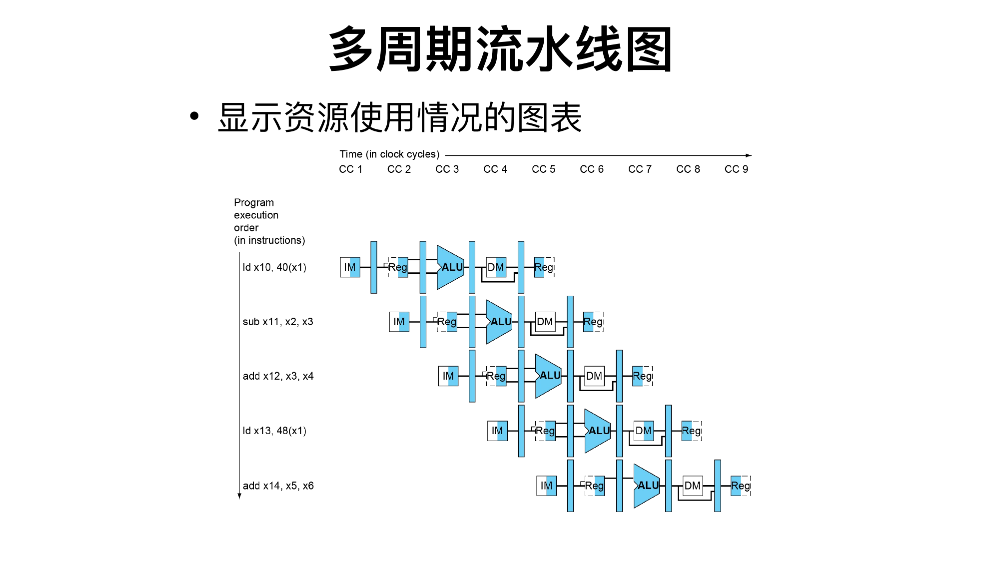
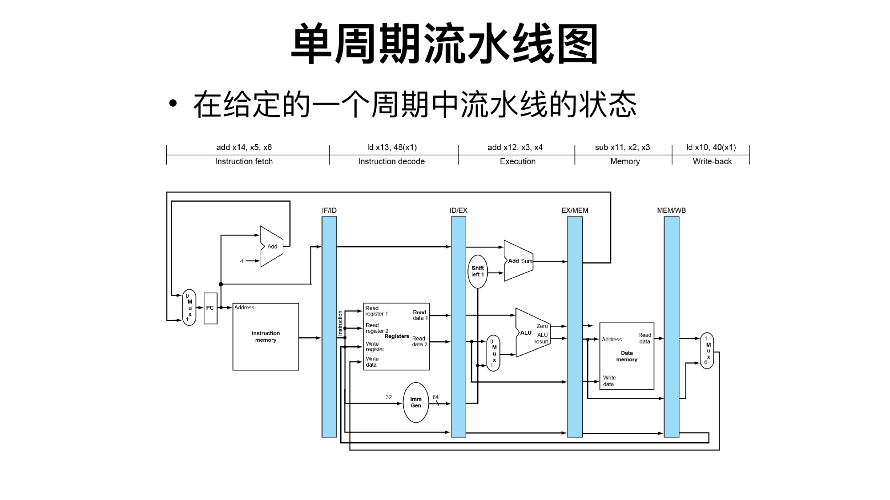
理想情况下，5 级流水线完成 n 条指令需要：
n + 4 个周期
而不是：
5n 个周期
但流水线会出现冒险。
结构冒险
硬件资源冲突。例如同一个周期里：
一条指令在 IF 阶段要读指令存储器。
另一条指令在 MEM 阶段要读/写数据。
如果指令和数据共用一个存储器，就冲突。解决方案：
指令存储器和数据存储器分开。
或者让流水线暂停。
这也解释了为什么现代处理器常把 L1 I-Cache 和 L1 D-Cache 分开。
数据冒险
后一条指令要用前一条指令的结果：
add x1,x2,x3 sub x4,x1,x5
sub 在 EX 阶段需要 x1，但 add
要到 WB 才写回。如果等 WB，会浪费周期。旁路把 ALU 结果直接送给后续指令的
ALU 输入。
时间表直觉：
cycle: 1 2 3 4 5 add: IF ID EX MEM WB sub: IF ID EX MEM WB
sub 的 EX 在 cycle 4，而 add 的结果在 cycle
3 EX 末尾已经算出，可以从 EX/MEM 旁路过去。
load-use 为什么旁路还不够
lw x1,0(x2) add x3,x1,x4
时间表：
cycle: 1 2 3 4 5 lw: IF ID EX MEM WB add: IF ID EX MEM WB
add 的 EX 在 cycle 4 一开始需要 x1，但
lw 的数据要到 cycle 4 的 MEM
末尾才从数据存储器出来。太晚了，所以必须插入 1 个 bubble：
cycle: 1 2 3 4 5 6 lw: IF ID EX MEM WB add: IF ID ID EX MEM WB
第二个 ID 表示 add 在译码级保持 1
拍，同时向 EX 级插入一个 bubble。硬件动作是：
PC 不更新。
IF/ID 不更新。
ID/EX 控制信号清 0，形成 bubble。
控制冒险
分支是否跳转要等比较结果出来。若处理器已经取了下一条顺序指令，结果发现分支要跳，就要清掉错误路径的指令。
降低控制冒险代价的方法：
提前在 ID 阶段计算分支。
分支预测。
预测错就 flush。
编译器把有用指令放到分支延迟槽，部分 ISA 使用过这种设计。
8.9 流水线题完整演练
题目：
lw x1,0(x2) add x3,x1,x4 sub x5,x3,x6 and x7,x5,x8
假设有完整旁路，但 load-use 需要停 1 个周期。画流水线。
第一步找依赖：
lw -> add: x1，load-use，需要停 1 周期 add -> sub: x3，ALU 结果，可旁路 sub -> and: x5，ALU 结果，可旁路
时间表：
cycle: 1 2 3 4 5 6 7 8 9 lw: IF ID EX MEM WB add: IF ID ID EX MEM WB sub: IF IF ID EX MEM WB and: IF ID EX MEM WB
解释：
add因为要等lw的数据，在 ID 级保持 1 周期；这一拍 EX 级插入 bubble。停顿时 PC 和 IF/ID 寄存器冻结，所以
sub仍停在 IF；下一条and不能在第 4 周期取指，必须到第 5 周期才 IF。add -> sub和sub -> and都靠旁路解决，不再额外停顿。
若只问“停几个周期”，答 1 个 load-use 停顿即可；若要求画图，要把后续指令也整体后移。
8.10 Cache 地址分解完整演练
题目：32 位地址，Cache 容量 4 KiB，块大小 16 B，直接映射。问 tag/index/offset 各几位。
第一步：块内偏移。
块大小 16 B = 2^4 B offset = 4 位
第二步：Cache 有多少块。直接映射相联度为 1。
块数 = 4 KiB / 16 B = 4096 / 16 = 256 = 2^8 index = 8 位
第三步：剩余是 tag。
tag = 32 - 8 - 4 = 20 位
所以地址格式：
| tag 20 | index 8 | offset 4 |
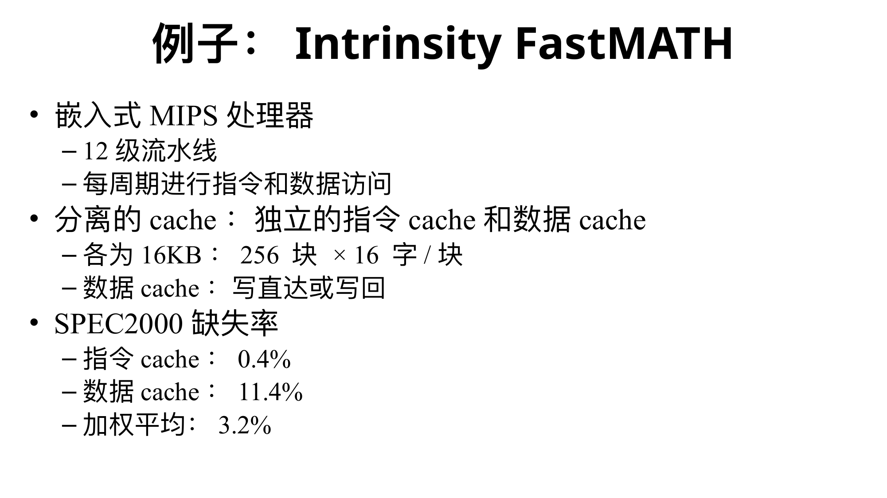
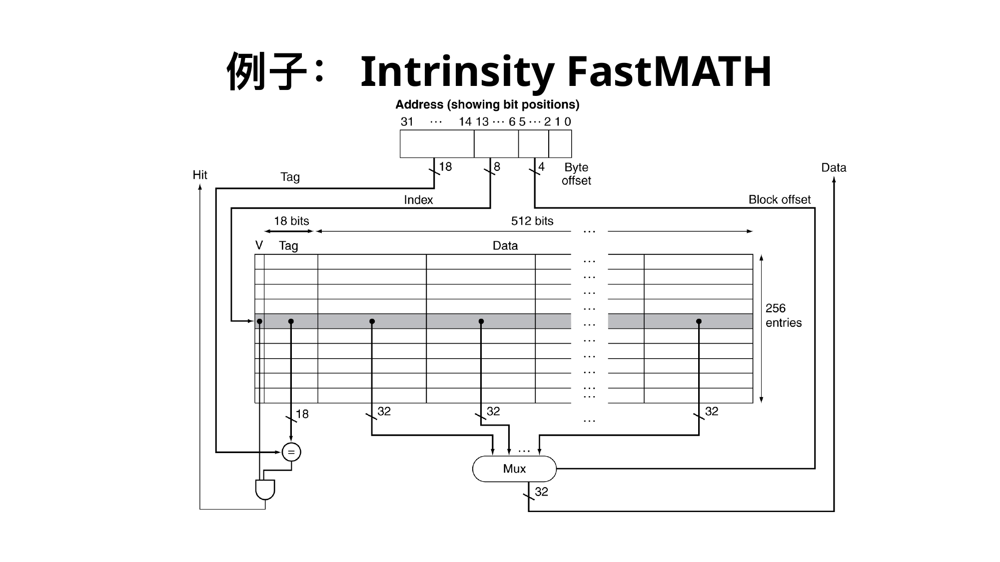
组相联版本
如果同样 4 KiB、块大小 16 B，但 4 路组相联：
总块数 = 4096 / 16 = 256 组数 = 256 / 4 = 64 = 2^6 offset = 4 位 index = 6 位 tag = 32 - 6 - 4 = 22 位
结论：相联度越高，组数越少，index 位越少，tag 位越多。
访问一个地址
假设直接映射，地址：
0x0000_1234
offset 是低 4 位：
offset = 0x4
index 是再往上的 8 位：
0x1234 >> 4 = 0x123 index = 0x23
tag 是剩下高位：
tag = 0x00001
访问流程：
用 index
0x23找到 Cache 中那一行。看 valid 是否为 1。
比较 tag 是否等于
0x00001。若匹配，用 offset
0x4取块内对应字节。若不匹配，发生 miss，把内存块调入这一行，并更新 tag 和 valid。
命中率题怎么做
地址序列：
0, 4, 8, 12, 16, 0
块大小 16 B，直接映射 Cache 足够大。块划分：
地址 0,4,8,12 属于块 0 地址 16 属于块 1
从空 Cache 开始：
0 : miss，调入块 0 4 : hit 8 : hit 12 : hit 16 : miss，调入块 1 0 : hit，块 0 仍在
命中 4 次，缺失 2 次，命中率 4/6，缺失率
2/6。
如果 Cache 只有 1 块，访问 16 会替换块 0，最后访问 0 又 miss。题目一定要看 Cache 容量和映射方式。
8.11 AMAT 和多级 Cache 完整演练
题目：
L1 命中时间 1 cycle。
L1 缺失率 5%。
L2 命中时间 10 cycles。
L2 缺失率 20%。
主存代价 100 cycles。
多级 AMAT：
\[AMAT = L1HitTime + L1MissRate \times (L2HitTime + L2MissRate \times MemoryPenalty)\]
代入：
AMAT = 1 + 0.05 × (10 + 0.20 × 100) = 1 + 0.05 × (10 + 20) = 1 + 1.5 = 2.5 cycles
注意这里的 L2 缺失率通常指“局部缺失率”：在已经 L1 miss 的访问中，有多少又 L2 miss。
如果题目给全局 L2 缺失率，要小心不要重复乘 L1 miss rate。读题时看它写的是：
local miss rate：局部缺失率。
global miss rate：全局缺失率。
8.12 虚拟存储从地址翻译开始理解
虚拟存储的核心是“程序看到的是虚拟地址，硬件最终要访问物理地址”。
虚拟地址：
| VPN | page offset |
物理地址：
| PPN | page offset |
页内偏移不变，因为虚拟页和物理页大小一样。需要翻译的是页号：
VPN -> PPN
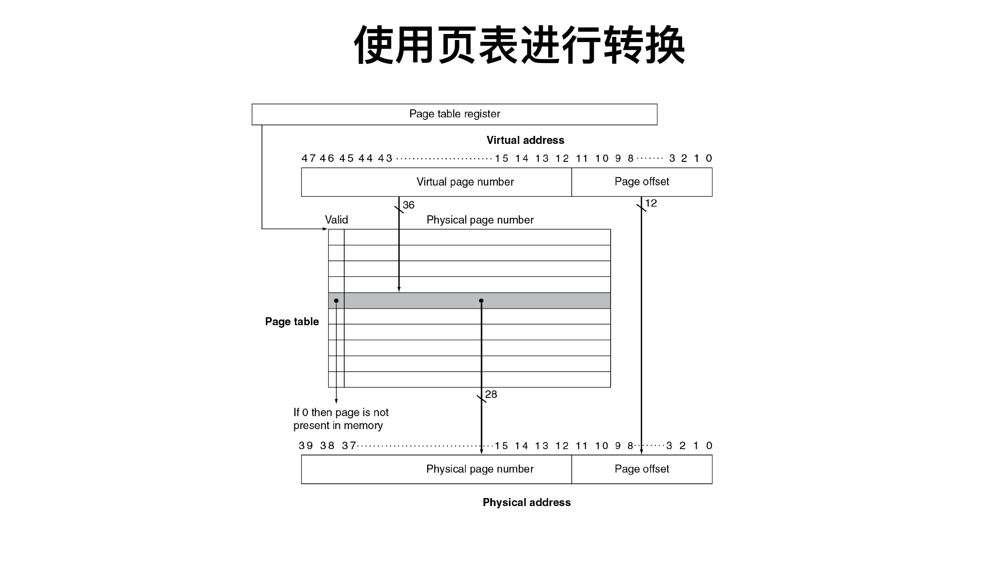
例题：页大小 4 KiB
页大小 4 KiB：
4 KiB = 4096 B = 2^12 B page offset = 12 位
32 位虚拟地址中：
VPN = 高 20 位 offset = 低 12 位
若虚拟地址是：
0x12345ABC
则：
VPN = 0x12345 offset = 0xABC
查页表发现：
VPN 0x12345 -> PPN 0x00F00
则物理地址：
0x00F00ABC
TLB 为什么必要
如果每次访存都先查页表，那么一次 load 可能变成：
访问页表 + 访问真正数据
访存次数翻倍。TLB 就是页表项的 Cache。
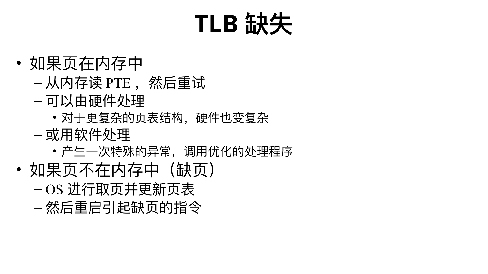
TLB 命中：
虚拟地址 -> TLB 找到 PPN -> 拼接 offset -> 物理地址 -> Cache/内存
TLB 缺失但页在内存：
查页表 -> 把页表项装入 TLB -> 重新翻译
页表项无效：
缺页异常 -> 操作系统从磁盘调页 -> 更新页表 -> 重新执行指令
易错点：
TLB miss 不等于 page fault。TLB miss 只是 TLB 里没有页表项；page fault 是页表项说这个页不在内存。
Cache miss 不等于 page fault。Cache miss 通常从下一级存储器取块；page fault 可能要访问磁盘，代价大得多。
8.13 Cache 一致性用一个故事理解
假设两个 CPU 核都有自己的 Cache，内存中 X = 0。
第一步：
CPU A 读 X，把 X=0 放入 A 的 Cache CPU B 读 X，把 X=0 放入 B 的 Cache
第二步：
CPU A 写 X=1
如果没有一致性协议，CPU B 的 Cache 里还留着旧值
X=0。接下来 CPU B 读 X，会读到 0，这就错了。
无效化协议的做法：
CPU A 写 X 前，广播“我要写 X” CPU B 监听到后，把自己 Cache 里的 X 标记为 invalid CPU A 写 X=1 CPU B 下次读 X 时 miss，再去拿新值
一致性通常要求：
同一个处理器自己的读写顺序要合理。
一个处理器写入某地址后，其他处理器最终能看到。
对同一地址的写，所有处理器看到的顺序一致。
简答题答法：
问题：多核私有 Cache 可能保存同一内存块的多个副本。 后果：一个核心写入后，其他核心可能读到旧值。 硬件方案：监听式协议或目录协议；常用无效化或更新策略。 状态机制：用有效位、脏位以及 MESI 类状态记录块是否独占、共享、修改。 软件配合：锁、原子操作、内存屏障保证同步语义。
8.14 哈佛结构题怎样答得完整
题目通常问“哈佛结构和冯诺依曼结构相比有什么优缺点，现代处理器如何结合”。
先定义：
冯诺依曼结构：指令和数据放在同一个存储器/地址空间中。 哈佛结构：指令存储和数据存储分开。
再比较：
结构 |
优点 |
缺点 |
|---|---|---|
| 冯诺依曼 | 统一地址空间，程序和数据都能用同一套机制处理，灵活，成本低 | 取指和访存争用通路，可能形成瓶颈 |
| 哈佛 | 取指和数据访问可并行，带宽更高，适合流水线 | 指令/数据空间分开，容量不易动态共享，系统复杂 |
现代折中：
L1 I-Cache 和 L1 D-Cache 分开，像哈佛结构。 L2/L3 Cache 和主存统一，像冯诺依曼结构。
这样做的原因：
流水线每周期都要取指，同时 load/store 也要访存。分离 I-Cache/D-Cache 可减少结构冒险。
更低层统一可简化内存管理，并允许代码和数据共享同一主存空间。
如果题目还问多核 Cache 问题，就接一致性：
多核中每个核心可能有私有 L1 Cache，同一数据块存在多个副本。 写入会造成副本不一致，需要 Cache coherence 协议。
8.15 并行处理题从 Amdahl 到 Roofline
Amdahl 完整例题
题目：程序 90% 可并行，使用 8 个处理器，理想并行部分加速 8 倍。总加速比是多少？
\[Speedup=\frac{1}{(1-0.9)+0.9/8}\]
计算：
= 1 / (0.1 + 0.1125) = 1 / 0.2125 = 4.706
所以不是 8 倍。原因是 10% 串行部分完全没有加速。
若处理器无限多：
\[Speedup_{max}=\frac{1}{0.1}=10\]
这说明串行部分决定上限。
Roofline 完整例题
题目：
峰值计算能力 100 GFLOP/s。
内存带宽 20 GB/s。
某程序算术强度 2 FLOP/Byte。
可达到性能：
\[\min(100,\ 20 \times 2)=\min(100,\ 40)=40\ GFLOP/s\]
因为 40 小于峰值计算 100，所以它是内存带宽受限。
若算术强度提高到 8 FLOP/Byte：
\[\min(100,\ 20 \times 8)=\min(100,\ 160)=100\ GFLOP/s\]
此时受计算峰值限制。
优化方向：
内存受限：提高局部性、分块、减少访存、合并访存。
计算受限：向量化、提高并行度、使用更快计算单元。
8.16 一套综合题从头做到尾
题目：
addi x5,x0,10 addi x6,x0,20 add x7,x5,x6 lw x8,0(x7) sw x8,4(x7)
已知单周期处理器，频率 1 GHz。问：
程序执行完
x5,x6,x7是多少。add x7,x5,x6的 ALU 输入、ALU 操作、写回寄存器。若
Mem``[``30``]``=99，执行后x8和Mem``[``34``]是多少。程序理想执行时间。
逐条执行：
addi x5,x0,10 -> x5 = 0 + 10 = 10 addi x6,x0,20 -> x6 = 0 + 20 = 20 add x7,x5,x6 -> x7 = 10 + 20 = 30 lw x8,0(x7) -> x8 = Mem[30] sw x8,4(x7) -> Mem[34] = x8
若 Mem``[``30``]``=99：
x8 = 99 Mem[34] = 99
第 2 问：
ALU 输入：x5 的值 10，x6 的值 20 ALU 操作：加法 写回寄存器：x7 写回值：30
第 4 问：
频率 1 GHz -> 周期 1 ns 单周期 CPU 每条指令 1 周期 5 条指令 -> 5 ns
如果换成流水线处理器，不考虑冒险，5 级流水线执行 5 条指令需要：
5 + 4 = 9 个周期
但这段代码有依赖：
addi x5 -> add 使用 x5 addi x6 -> add 使用 x6 add x7 -> lw/sw 使用 x7 lw x8 -> sw 使用 x8
如果有完整旁路，ALU 结果依赖可前递；lw -> sw
是否停顿取决于数据存储器写入数据的旁路设计。题目若没说明，不要擅自加复杂假设，按题目给定流水线规则判断。
9. 补充考点
本章补充容易出短问的概念。
9.1 SPEC、基准测试和性能陷阱
SPEC 是标准性能评测组织，常见基准包括：
SPEC CPU：偏 CPU 计算性能，尽量减少 I/O、网络等因素影响。
SPECpower：关注单位功耗下的性能，体现能耗比。
基准测试的意义：
用标准程序集合比较机器性能。
避免只用单个小程序造成片面结论。
区分响应时间和吞吐率。
常见陷阱/谬误：
只看时钟频率：频率高但 CPI 或指令数更大，程序可能更慢。
只看 MIPS：不同 ISA 的一条指令完成的工作不同，MIPS 不适合跨 ISA 比较。
只看峰值性能：峰值是理想上限，真实程序受 Cache、分支、I/O、并行效率影响。
空闲功耗不重要：服务器和移动设备大量时间可能处于低负载，空闲功耗会显著影响总能耗。
优化局部就等于整体快：Amdahl 定律说明，被优化部分占比小，总收益也小。
看到“最可靠性能度量”，通常选执行时间；看到“能耗相关”，要想到功耗墙和性能/瓦。
9.2 同步、原子操作和
lr/sc
多处理器程序会出现数据竞争。例如两个线程同时执行：
x = x + 1;
这不是一个不可分割动作，实际包含：
读 x -> 加 1 -> 写 x
如果两个核心都读到旧值，再分别写回，就会丢失一次更新。
原子操作的目标：让“读-改-写”看起来不可分割。
RISC-V 可用 lr/sc 实现原子交换：
lr.d rd,(rs1)：load-reserved，读取地址rs1的值，并对该地址建立保留。sc.d rd,rs2,(rs1)：store-conditional，若保留仍有效，就把rs2写入rs1指向的地址。sc.d成功时通常返回 0，失败时返回非 0，失败需要重试。
典型自旋锁思路：
again: lr.d t0, (lock) # 读锁 bne t0, x0, again # 锁不是 0，说明有人占用 addi t1, x0, 1 sc.d t2, t1, (lock) # 尝试写 1 bne t2, x0, again # 写失败，重试
为什么需要 lr/sc：
普通
lw/sw之间可能被其他核心插入写入。lr/sc能检测这段时间内该地址是否被别人改过。这为锁、信号量、原子计数器提供硬件基础。
简答题关键词：数据竞争、临界区、原子读改写、锁、内存一致性、同步开销。
9.3 多发射、动态调度和寄存器重命名
流水线每周期发射 1 条指令。多发射希望每周期发射多条指令，提高指令级并行 ILP。
静态多发射：
编译器决定哪些指令同一周期发射。
硬件较简单。
编译器必须避开结构、数据和控制冒险。
如果找不到可并行指令，发射槽会空着。
动态多发射：
硬件在运行时决定发射哪些指令。
可利用运行时信息，调度更灵活。
硬件复杂，功耗高。
动态调度的核心思想：
只要操作数准备好，即使前面的指令还没完成，也可以先执行后面的独立指令。
它需要处理三类相关：
RAW：read after write，真数据相关，不能乱。
WAR：write after read，名字相关，可通过寄存器重命名消除。
WAW：write after write，名字相关，可通过寄存器重命名消除。
寄存器重命名：
架构寄存器数量固定，例如
x1。硬件内部有更多物理寄存器。
不同指令写同一个架构寄存器时，可映射到不同物理寄存器，消除假相关。
推测执行：
分支结果未确定时，按预测路径先执行。
预测正确就提交结果。
预测错误就撤销推测路径。
为什么这部分常出概念题：
多发射和动态调度可以提升 ILP。
但依赖关系、分支、Cache miss、功耗和复杂性限制收益。
复杂性会带来功耗墙。
9.4 DRAM、Flash、磁盘、RAID 和 I/O
存储介质比较：
| 介质 | 速度 | 容量/成本 | 典型用途 | 关键特点 |
|---|---|---|---|---|
| SRAM | 最快 | 贵、容量小 | Cache | 不需刷新 |
| DRAM | 较快 | 主存级容量 | 主存 | 需要刷新 |
| Flash | 比磁盘快 | 介于 DRAM 和磁盘 | SSD、U 盘 | 擦写次数有限 |
| 磁盘 HDD | 慢 | 容量大、便宜 | 二级存储 | 机械寻道和旋转延迟 |
DRAM 为什么需要刷新：
DRAM 用电容存储位。
电容会漏电。
必须周期性刷新，否则数据丢失。
磁盘访问时间：
磁盘访问时间 = 寻道时间 + 旋转延迟 + 传输时间 + 控制器开销
其中：
寻道时间：磁头移动到目标磁道。
旋转延迟：等待目标扇区转到磁头下。
传输时间：真正读写数据。
选择题常见判断：
顺序访问磁盘比随机访问快很多，因为寻道/旋转开销少。
SSD 没有机械寻道，但仍有擦写粒度和寿命问题。
Flash 写入前通常需要擦除，擦除块比读写页大。
RAID 的核心目标：
提高可靠性。
提高吞吐率。
用多个廉价磁盘组合出更好的存储系统。
常见 RAID：
RAID 0：条带化，无冗余，性能高但可靠性差。
RAID 1：镜像，可靠性高，容量利用率低。
RAID 5：分布式奇偶校验，可容忍一个磁盘故障。
I/O 系统要点：
设备控制器负责和具体设备通信。
操作系统提供统一接口，隐藏设备差异。
中断让 CPU 不必一直轮询设备。
DMA 可让设备直接和内存传输数据，减少 CPU 搬运负担。
9.5 汉明距离、ECC 和可靠性
汉明距离：两个码字对应位不同的个数。
例如：
101100 100110
不同位有 2 个，所以汉明距离为 2。
码字集合的最小汉明距离决定检错/纠错能力：
检测
d位错误：最小距离至少d + 1。纠正
d位错误：最小距离至少2d + 1。
因此：
奇偶校验可以检测 1 位错误，但不能定位并纠正。
SEC 需要能纠正 1 位错误，要求最小距离至少 3。
SEC/DED 可纠正 1 位并检测 2 位错误，常用于 ECC DRAM。
可靠性指标：
\[Availability = \frac{MTTF}{MTTF + MTTR}\]
提高可用性有两个方向：
增大 MTTF：减少故障。
减小 MTTR：故障后更快修复。
9.6 虚拟机和虚拟机监视器
虚拟机 VM：让一个物理机器上运行多个隔离的系统环境。
虚拟机监视器 VMM/Hypervisor 的职责：
分配和隔离 CPU、内存、I/O 设备。
捕获敏感指令或特权操作。
管理客户机操作系统看到的虚拟硬件。
处理虚拟中断、虚拟 I/O、虚拟内存映射。
虚拟机和普通进程的区别：
普通进程共享同一个操作系统内核。
虚拟机通常运行自己的客户机操作系统。
虚拟机优点：
隔离性好。
便于服务器整合。
便于迁移、快照和恢复。
不同操作系统可运行在同一物理机上。
代价：
VMM 带来额外开销。
I/O 虚拟化复杂。
内存地址转换可能多一层，例如客户机虚拟地址到客户机物理地址，再到宿主机物理地址。
9.7 消息传递、互联网络和并行陷阱
共享内存并行：
多个处理器看到同一地址空间。
通过 load/store 共享数据。
需要锁、原子操作、Cache 一致性和内存一致性。
消息传递并行：
每个节点有独立地址空间。
节点之间通过 send/receive 通信。
常见于集群和分布式系统。
消息传递优点：
扩展性好。
每个节点相对独立。
不需要硬件维护全局 Cache 一致性。
消息传递缺点：
程序员需要显式划分数据和通信。
通信延迟和带宽成为瓶颈。
负载均衡困难。
互联网络常见指标：
延迟 latency：一条消息从源到目的的时间。
带宽 bandwidth：单位时间能传多少数据。
拓扑 topology：节点怎样连接。
二分带宽 bisection bandwidth：把网络切成两半时，跨切口可用带宽。
并行处理常见陷阱：
认为处理器数翻倍，性能就翻倍。实际受串行部分、通信和同步限制。
忽视负载均衡。最慢的线程会拖住整体。
忽视内存带宽。核心越多，访存压力越大。
忽视数据一致性。共享变量没有同步会出错。
把 GPU 当万能加速器。分支发散、随机访存、小规模任务都可能让 GPU 不划算。
9.8 常见陷阱和谬误
这些不是大计算题，但很适合出选择题：
执行时间通常比 MIPS/MFLOPS 更可靠。
性能不能只看频率。
指令数少不一定快，CPI 和时钟周期也重要。
流水线提高吞吐率，不缩短单条指令延迟。
旁路不能解决所有数据冒险，load-use 通常仍需阻塞。
分支预测错误需要清空错误路径指令。
Cache 块越大不一定越好，太大会增加缺失代价和污染。
相联度越高不一定越好，可能增加命中时间和硬件复杂度。
平均访问时间必须把 miss penalty 算进去。
TLB miss 不等于缺页。
Cache coherence 不等于 memory consistency。
多核性能受通信、同步、串行部分和内存带宽限制。
GPU 适合规则数据并行，不适合所有程序。